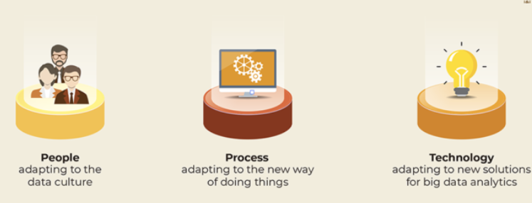

In the last blog post, we discussed what a data lake is, why you need them and how you can get started. Today, we take the next step—setting you up for data success with clear, actionable, ongoing, organization-wide governance.
Data lake is built with analytics in mind—it is ready to store vast data and enable the discovery of insights. This radical change in the way we think about raw data brings with it a slew of changes needed to make it happen. Typically, this is across three dimensions — people (new roles and responsibilities), process (the way in which data is processed), and technology (the tools and systems in and around the data lake). To accommodate these changes in a non-disruptive manner, your data governance engine also needs to adapt to this.
Data Governance for Data Lakes
In this blog post, I'll talk about how you should approach your data governance initiative if you're adopting the data lake. If you don't have a data governance initiative in your organization at all, now is a good time to start. If you already do have a data governance engine, consider the following aspects as an upgrade to your current set up.
The people dimension: Culture, roles, and responsibilities
With increased computing power and virtually endless storage, data lake allows unlimited volume and variety of data. While this can overwhelm business and IT teams, this is also an immense opportunity and undeniable competitive advantage. As an organization, if you aspire to leverage your data, you need to equip yourself to not be overwhelmed by it. You can begin, by building a data culture and encouraging your teams—both business and IT—to see the value of data.

But that's not enough. In addition to adapting to a data culture, you also need certain specific skillsets like data scientists, Hadoop administrators, and business analysts, etc.—you might either hire for these roles or groom internal team members to adapt. If you don't already have a DG program, make sure you include these new roles into your DG strategy sessions, right from the start. If you already have a functioning DG council, include new roles in it as soon as possible.
Don't forget to update your DG policies with details about the data lake—like who owns the ingested data (the data owner) and who is responsible for monitoring the data (the data steward), etc.
The process dimension: Knowing how much to govern and why
The data lake functions differently from any data storage solution you may have had so far—even a data warehouse. Your governance policy needs to adapt to this change.
For instance, data in a data lake is in one of four zones — transient, raw, trusted or curated zone. Each zone serves a different purpose, therefore follows a different process. For instance, comments on social media streams, stored in the raw zone, need not be processed or transformed before performing sentiment analysis. Whereas subscription data needs a different approach—you might need to mask personally identifiable information, or confidential information before performing analytics.
Your data governance needs to have processes that understand this. It has to identify what needs to be governed and why. Whether the data is lightly or heavily governed both the ingestion and consumption stage policies must be in place for a data lake.
For example, ingestion policies must include definitions for:
- Data tagging and classification
- Data owner and steward
- Metrics, frequency and scoring for data quality
While consumption stage policies must include:
- Maintaining data catalog and publishing it to stakeholders
- Access definitions
- Monitoring and maintaining audit trail of data usage
The technology dimension: Tools, security and privacy
With the rising popularity of data lakes, many tools are being developed to support the ecosystem. At the ingestion end of the data lake, there are tools to discover data, integrate various input data streams into the data lake, classify data and visualize the data flow. At the consumption end of the data lake, there are tools to transform and convert data into the required form and several self-service analytics tools for the business-users and data analysts.
You should ensure that these tools conform to your data governance policies especially in the areas of security and privacy. Your DG policy must cover changes to the common data environment that a tool might bring in—data structure changes for a specific tool, new tags etc. Owing to the easy availability of these tools, consumers of the data from the lake can easily choose and deploy the ones they're comfortable with. Policies must be drawn to monitor and audit the usage of these tools.
A good data governance strategy will help the organization gain control over the swelling data that flows into the data lake. By putting the data through clear definitions and standards, data governance will help improve the quality and trustworthiness of data and help determine what data is fit for use and what can be discarded.